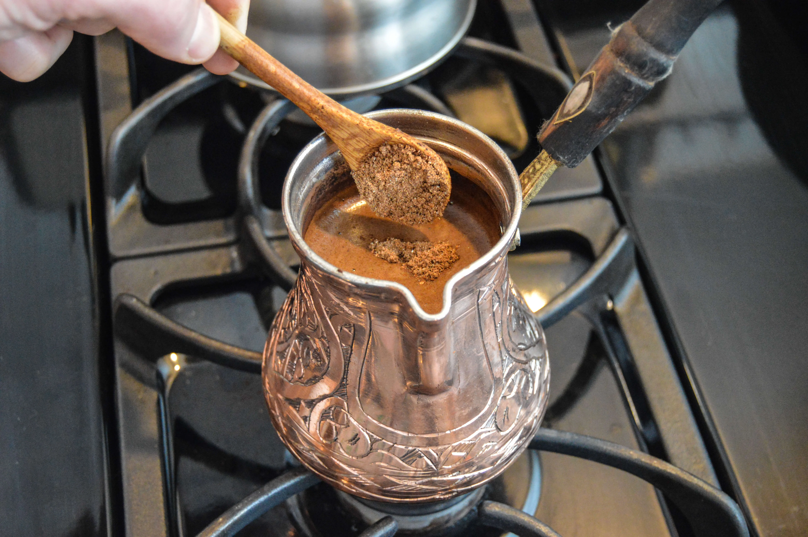
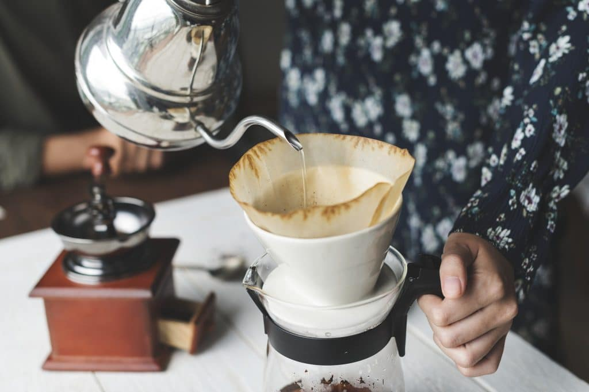
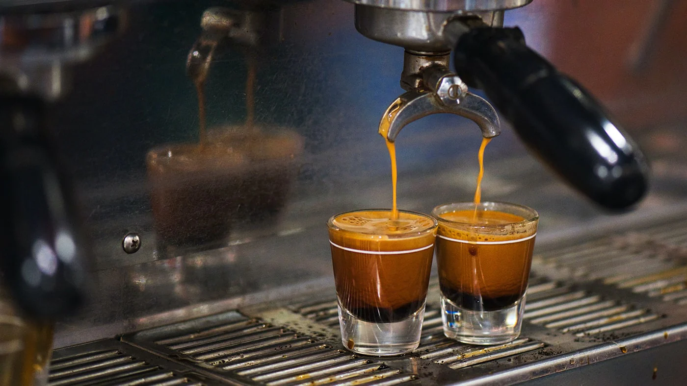

Kahve yapımı, seçilen kahve türüne göre değişiklik göstermektedir. Bazı kahveler cezvede, bazıları filtre kahve makinesinde, bazıları ise espresso makinesinde hazırlanır. Kahvenin lezzeti, kullanılan çekirdeğe, su miktarına ve hazırlanış yöntemine göre farklılık gösterebilir.

Türk kahvesi, ince çekilmiş kahve ile suyun cezvede pişirilmesiyle hazırlanır. İstenirse şeker de eklenebilir. Köpüklü olması Türk kahvesi için önemli bir özelliktir. Genellikle küçük fincanlarda servis edilir.

Filtre kahvede öğütülmüş kahve, sıcak su ile demlenir. Bu yöntem daha hafif ve daha sade bir kahve deneyimi sunar. Özellikle günlük tüketimde oldukça yaygındır.

Espresso makinelerinde sıcak su, yüksek basınçla kahve çekirdeklerinden geçirilir. Böylece yoğun aromalı ve sert içimli bir kahve elde edilir. Latte ve cappuccino gibi kahvelerin temelinde de espresso bulunur.